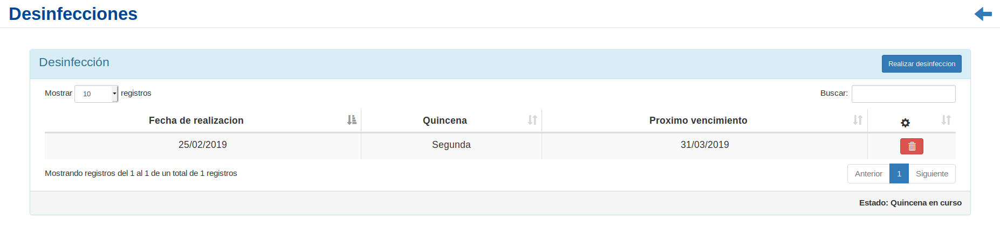
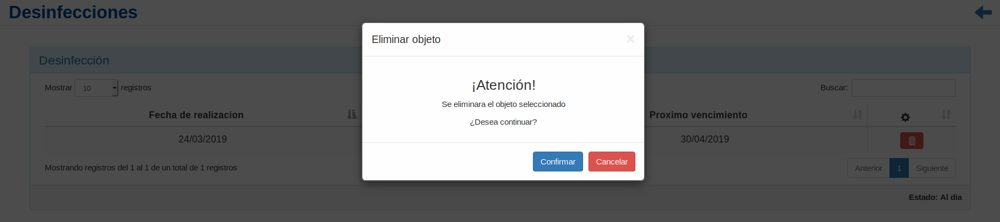
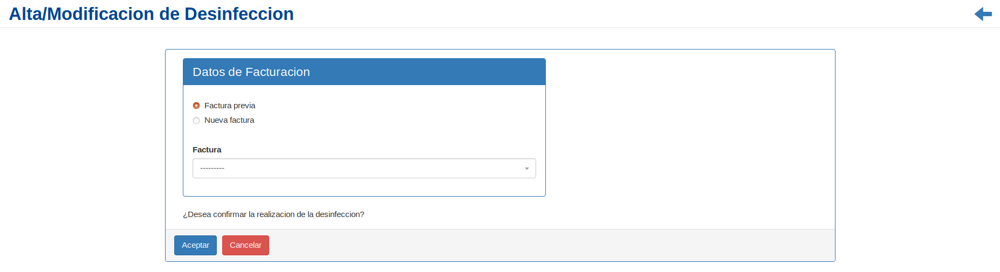

Desinfecciones¶
Se presentará una pantalla que contendrá un listado con todas las Desinfecciones de un vehículo particular que se encuentren registrados en el sistema hasta la fecha.
Junto con el listado, se presentarán un conjunto de funcionalidades que permitirán manipular cada Desinfección.
Estas funcionalidades son:
Además, si el usuario desea Registrar una nueva Desinfección:
Eliminar Desinfección¶
Si el usuario desea eliminar una Desinfección, deberá seleccionar en la columna de acciones asociado a la Desinfección y presionar el ícono
EliminarUna vez realizado el paso anterior aparecerá la siguiente ventana emergente (modal):
En esta parte el usuario deberá decidir si confirma la eliminación de la Desinfección o no. Si desea confirmar la eliminación deberá presionar el botón
Confirmar, caso contrario, presionará el botónCancelar.
Nueva Desinfección¶
Si el usuario desea crear una nueva Desinfección, deberá presionar el botón
Realizar Desinfección.A continuación, el sistema lo redirigirá a la siguiente pantalla. En esta parte, al usuario se le presentará un formulario y deberá ingresar los datos solicitados para dar de alta una nueva Desinfección.
Atención
El usuario ingresará los datos de facturación correspondientes (factura previa o nueva factura) y confirmará los datos. Una vez completado el formulario, se volverá a la pantalla que contendrá el listado de inscripciones.